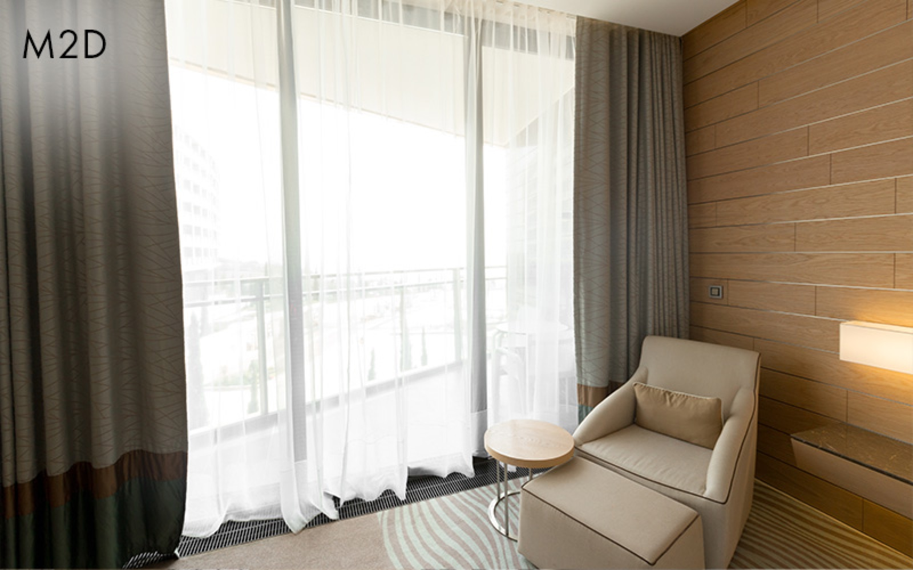
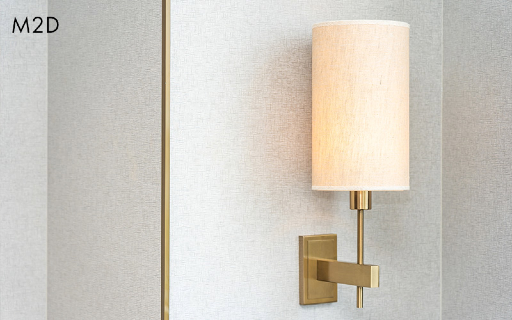
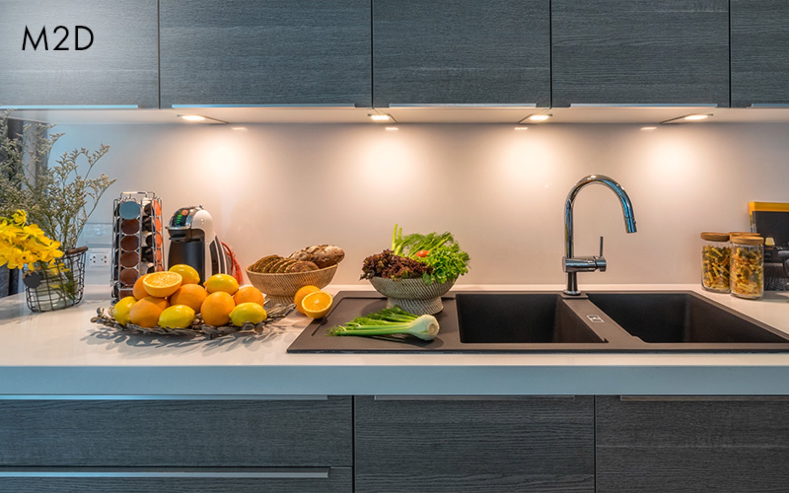
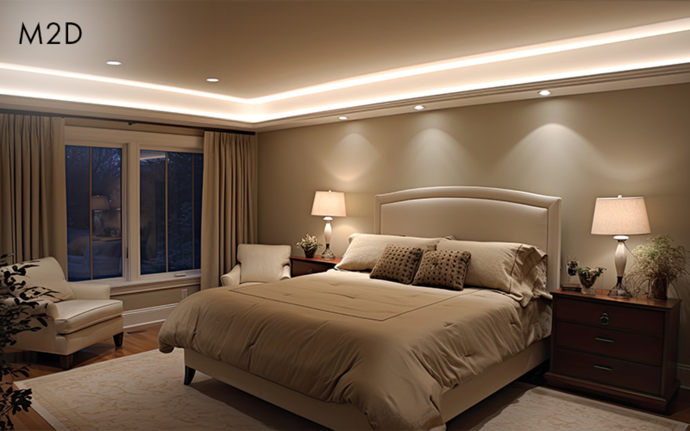
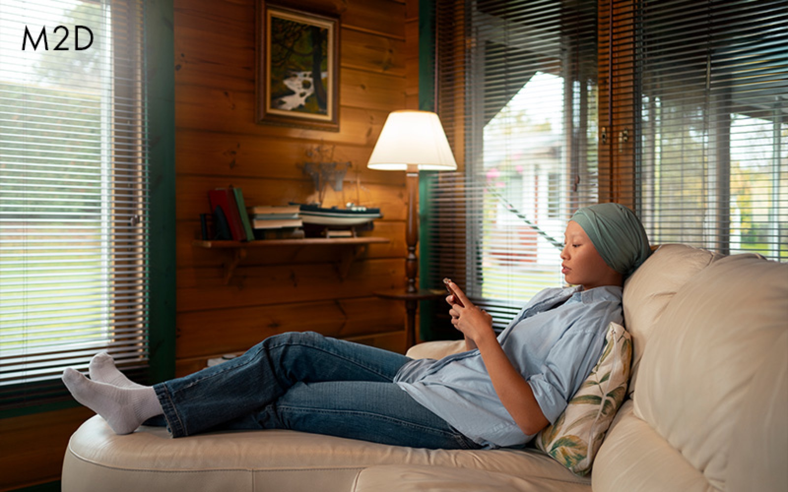

Key Takeaways
Use natural light to improve mood, expand space, and reduce energy use during the day.
Artificial lighting enables mood setting, function, and balance in the absence of daylight.
Smart layering of task lighting with both natural and artificial sources offers best results in Japanese-/Scandinavian-inspired apartment living.

It is no secret that light shapes how a space looks and feels, especially in countries like Singapore where many homes get lots of sun exposure. Knowing when to rely on natural light and when to introduce artificial lighting is essential for versatile and comfortable interiors. A well-balanced mix can help you enjoy bright, lively mornings and cosy, functional evenings. With that in mind, let’s explore how different light sources can be used strategically for home interior design.
1. Maximise Natural Light for Daytime Living Areas

To achieve greater energy efficiency and a more spacious feel, we recommend maximising natural light in living areas using sheer curtains, slim frames, and strategically placed mirrors for instance. South-facing units benefit most, but even shaded home interior design layouts can benefit from shaded courtyards and full-height windows. Ample daylight enhances mental well-being and encourages a connection to the outdoors, which is essential in Singapore’s urban jungle.
2. Use Artificial Lighting to Fill Gaps or Create Mood

As the sun sets, rely on artificial lighting to keep your home comfortable. General lights should be functional yet soft, while accent fixtures, like wall sconces and track lights, add dimension to the overall lighting. In multi-task areas, adjustable lighting allows for greater flexibility: bright for work, soft for relaxation. Good design anticipates moments when artificial lighting becomes your main light source.
3. Task Lighting Is Key for Functionality

Task lighting is essential for illuminating work zones. Under-cabinet LEDs in kitchens, reading lamps beside sofas, and office desk lights are examples of how these light installations help reduce eye strain and improve the function of the respective spaces. Layering this light over ambient levels is a popular strategy in modern Singaporean homes, where space is limited but tasks are multifaceted.
4. Avoid Overexposure to Direct Sunlight
Too much natural light can be detrimental. Overexposure to direct sunlight, for instance, may cause heat build-up, glare, and fading of furnishings. In order to minimise overexposure to direct sunlight, use blinds, UV-filtering glass, or planting near windows. This way, daylight is diffused and you can enjoy the brightness that comes with it without the harsh glares. This technique is especially important for tropical climates, where the sun can wear down materials and heat up homes quickly.
5. Match Lighting Type to Room Function

Each room has unique lighting needs:
Living Room: Soft ambient lighting paired with floor and table lamps
Dining Area: A feature pendant or chandelier over the table helps create a warm dining ambience
Kitchen: Bright task lighting for countertops keep the kitchen area safe and well-lit
Bedroom: Warm, dimmable ceiling lights juxtaposed with bedside reading lamps
Bathroom: Shadow-free mirror lighting for grooming
In more compact condominium interior design layouts, for instance, careful lighting planning ensures that each zone feels more designated and purposeful.
6. How to Effectively Blend Both Natural and Artificial Light

To create harmony throughout the day, it is important to find the right mix of natural and artificial light sources:
Install sensors or automated controls to adjust artificial lighting as daylight wanes
Use layerable fixtures: recessed downlights for general brightness, wall sconces for ambience, and task lighting for more specific brightness levels
Choose LED bulbs that mimic daylight during the day and warmer tones at night
Position mirrors or glossy surfaces to bounce natural light deep into rooms
Good lighting integration supports both functionality and design, making your space feel complete in any lighting condition.
Striking balance between natural light and artificial lighting is the secret to a well-lit, versatile home. Utilise daylight to lift mood and define spaces during the day, and layer functional task lighting and softer accent fixtures in the evening. Also, be careful to eliminate glare and avoid overexposure to direct sunlight to maintain comfort and preserve your furniture.
Here at M2D Design and Consultancy, our experience and expertise allow us to adapt the right lighting strategies to each individual layout to suit your requirements and lifestyle habits. From HDB to condominium interior design, each concept is carefully tailored to create a home that feels and looks warm and inviting around the clock.
For more information about our services and how we can support you, please contact us today.